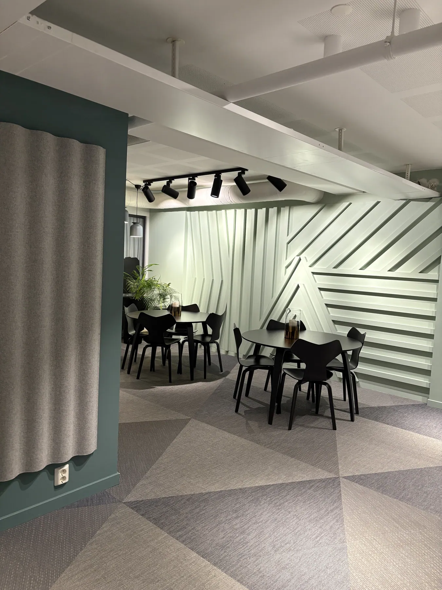
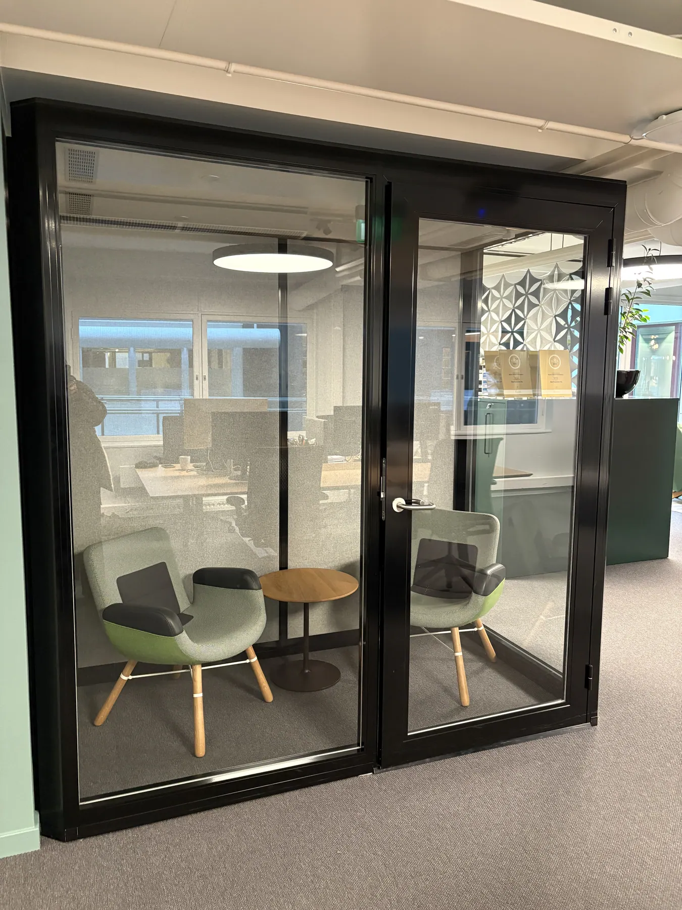
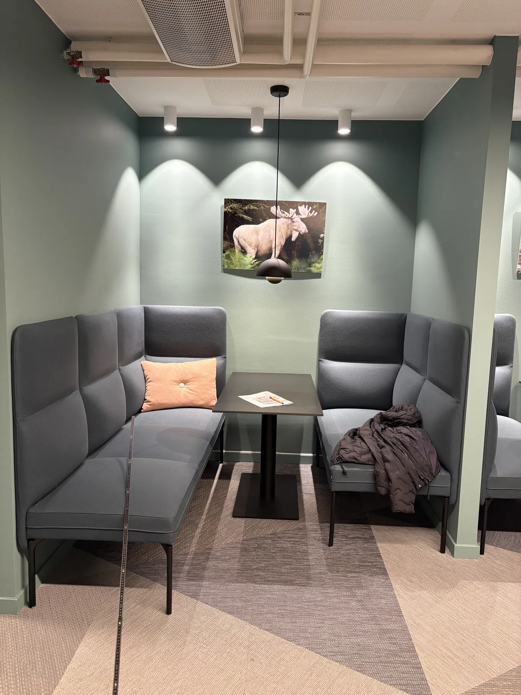
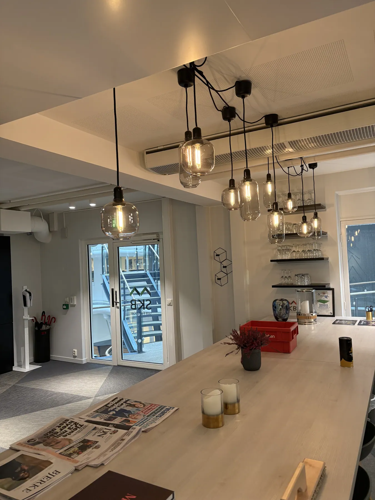

Stiftelsen Kaare Berg
2. etasje
Kontor med åpne arbeidsplasser, glassrom, en lun sone med sofaer og et kjøkken med langbord. Grønne vegger, skulpturelle veggpaneler og mønstret teppe binder etasjen sammen.
Monn tegnet planløsning og møblering, fra første skisse til endelig møbleringsplan i februar 2025.